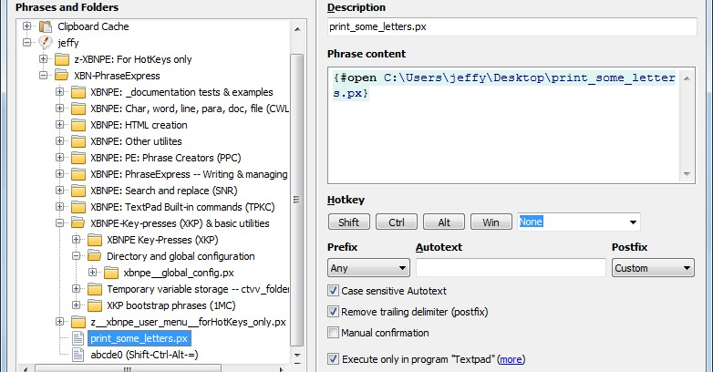
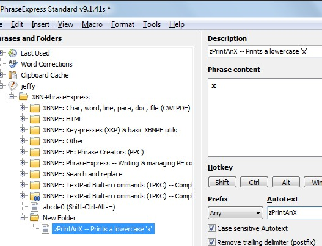

[BACK] (XBN-PhraseExpress is released under the LPGL 2.1)
This document describes the format of plain-text phrase-files, as used in the XBN-PhraseExpress project, and how to import them. I do not edit or create any phrases in the PhraseExpress application. I only do so in TextPad.
Contents:
[GO] Plain-text phrase format[GO] Plain-text phrase-file format[GO] Step-by-step: Importing one plain-text phrase-file into PhraseExpress[GO] TIP: Auto-display of most-recently changed phrase-files (alternative steps for Xplorer2)[GO] Importing multiple phrase-files[GO] Troubleshooting import problems(*
The phrases in this file print some letters
*)
zPrintAnX -- Prints a lowercase 'x' x zPrintAnX
zPrintAY -- Prints a lowercase 'y' y zPrintAY
zPrintNYs -- Prints one-or-more 'y's (user prompt) {#LOOP y -count {#INPUT -head How many y-s? -single}} zPrintAY
Empty lines are okay. Note that tabs in the comment will cause incorrect, or entirely empty, phrases to be imported (one for every line in the comment that contains a tab).
Phrase files are postfixed with "px.txt". For example
print_some_letters.px.txt
After importing, the ".txt" is stripped off:
Note that phrase-files cannot be named with only ".px" as its extension. PhraseExpress does not recognize files with only ".px", when attempting to import them:

Here's a plain-text phrase (in compressed format):
zPrintAnX -- Prints a lowercase 'x' x zPrintAnX
There are three fields, each separated by tabs:
zPrintAnX -- Prints a lowercase 'x'xzPrintAnXA phrase is only importable when contained in a single line. Multiple phrases may exist in a phrase-file.
The autotext is intentionally duplicated in the first word in the description. This is called the "description-autotext", and it is required. Everything after it
" -- Prints a lowercase 'x'"
is optional. The reason for this duplication is so, when browsing the phrases in the PhraseExpress application, it is obvious which phrase you're looking at--only the description is displayed when browsing the phrase-heirarchy.

Most phrases in XBN-PhraseExpress have this autotext-redundancy.
In addition, phrases with this redundant-autotext can take advantage of the "pc2" utilities. When composing phrases, I write them in a two-line format: the first line being the description (with the first word autotext), the second the phrase-body:
zPrintAnX -- Prints a lowercase 'x' x
Putting the cursor in the description line, and then running "pc2", "compresses" this two-line phrase into a one-line--and importable--format:
zPrintAnX -- Prints a lowercase 'x' x zPrintAnX
Because of this "compression", the description-autotext is critical, and the autotext itself is derived from it. In other words, do not edit or create the autotext field, only create and edit the description-autotext.
To verify phrases conform to this format, use the "mpfpl" action (see "xhpc"). "mpfpl" bookmarks all properly-formatted lines in the current phrase-file. The remaining, un-marked lines are badly-formatted meaning, for example, they contain too many or too few tabs, or the autotext field is not equal to the description-autotext.
It is reasonable to import one or a few phrase-files manually. This key-press sequence, as needed in the phrase-format dialog, will help immensely:
PGDN, UP, TAB, TAB, ENTER
Importing tens or hundreds of phrase-files (as of TextPad 7.0.9, there are 332 output by TPKC sub-build-proc 06) requires an external--not written in PhraseExpress--script. Here is the script for Macro Scheduler:
Import multiple files into PhraseExpress.scp.txt
(Rename this to
"Import multiple files into PhraseExpress.scp"
before importing it into Macro Scheduler.)
This is useful even when importing a single file. I happen trigger it with "zCASpACCENT", and then input the number of phrase-files.
Be aware that this script is not perfect, and it is likely that none could be. Importing particularly large files, especially, will likely fail (extremely large phrase-files should be avoided). That is, at least one phrase file will likely be corrupted with, for example, the phrase-body actually in the autotext field. (The TPKC sub-build-proc-07 immediately follows 06, and does nothing but verify these imports--it generally finds between 0 and 5 errors).
If you come up with an alternative script, I would be pleased to list it here.
aliteralmind-xbn AT yahoo.com
When a phrase is imported, but the phrase doesn't work, here are common import-related problems:
mpfpl" or "maixbxbx" to verify all phrases in a single file.{#insert zAscQQ}
{#asc 34}) (or simply a single-quote) instead.There is a separate document regarding non-import-related problems.